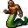
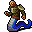
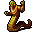
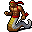
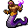
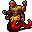
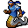

ナーガの一覧 List of nagas
英語版 CrawlWiki の記事「List of nagas」(0.28 向け、2022-03-01 版)の翻訳です。原文の著者は編集履歴をご覧ください。
この記事は 0.28 の時点の内容で、最新の 0.34 とは違うところがあるかもしれません。
このページはさまざまなナーガのモンスターについての記事だ。プレイヤーの種族についてはナーガを参照。
| 奇妙で、おぞましい。
「神々とアスラと天のリシたちのあいだにあって、おお優しき女人よ、ナーガは大いなる力を授かっている。大いなる速さをもち、さらにすぐれた芳香をも授かっている。彼らは崇められるにふさわしい。恩恵を授けることができる。まことに、われらもまた、他の者たちに付き従われるにふさわしい。言っておくが、女人よ、われらは人間の目には見えないのだ。」 |
ナーガは残忍な蛇人の種族で、獣の棲み処から分かれた蛇穴に棲んでいる。動きは遅く、防具もほとんど着けていないが、重い武器を持ち、毒を吐きかけ、筋肉質の尻尾でこちらを締めつけてくる。
ナーガの種類
N 

N 

N 

N 

N 

N 

ユニークのナーガ
N 

サラマンダーの種類
サラマンダーはナーガの近縁で、姿もよく似ているが、棲みかである溶岩とたいへん相性がいい。
N  サラマンダー- 溶岩に棲む奇妙な生き物で、通りがかった者に燃える長柄武器や弓で襲いかかる。
サラマンダー- 溶岩に棲む奇妙な生き物で、通りがかった者に燃える長柄武器や弓で襲いかかる。
N  サラマンダーの秘伝者- 炎の力を操る術者で、敵を傷つけ、味方を支援する。
サラマンダーの秘伝者- 炎の力を操る術者で、敵を傷つけ、味方を支援する。
N  サラマンダーの暴君- 戦いで火山のむき出しの力を操る蛇の民。その眼差しは敵を弱らせる。
サラマンダーの暴君- 戦いで火山のむき出しの力を操る蛇の民。その眼差しは敵を弱らせる。
廃止されたナーガとサラマンダー
N  ラミア- 美しく、同族を喰らうナーガの女王。戦士としても術者としても一流だった。
ラミア- 美しく、同族を喰らうナーガの女王。戦士としても術者としても一流だった。
N  サラマンダーの炎術師- 動きの素早いサラマンダーで、炎の一撃で敵の周りの空気に火をつけた。
サラマンダーの炎術師- 動きの素早いサラマンダーで、炎の一撃で敵の周りの空気に火をつけた。
N  サラマンダーの嵐招き- 秘伝の詠唱を知るサラマンダーで、敵に炎の嵐を見舞うことができた。
サラマンダーの嵐招き- 秘伝の詠唱を知るサラマンダーで、敵に炎の嵐を見舞うことができた。